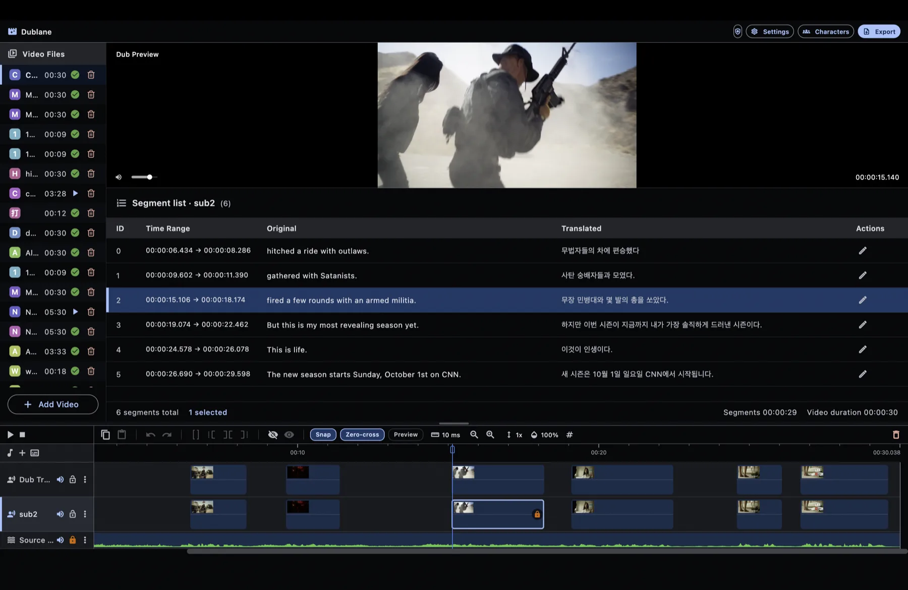

Result
Same clip, two states: the source, and the cut with bilingual subtitles burned in.
The files on this page are compressed for the web; the resolution matches what Dublane exported (1920 × 1080).
Another language: the Chinese page uses the same clip with Chinese subtitles — one project, a different target language, and both the subtitles and the cut follow.
Steps
Six steps from import to export, all in the Dublane main window.
1
Import the video
Click “Add Video” below the video library and pick the 30-second interview. The file is read in place; thumbnails, waveform and duration appear immediately.
2
Run AI analysis
Click the play icon on the video row, pick English as the spoken language and your target language, then start. Audio extraction, VAD, speech recognition and translation run in one pass.
3
Proofread the translation
Fix the wording line by line in the segment table. Editing one line touches only that line — no re-analysis and no re-recording of dubs.
4
Confirm the subtitle track
“sub2” in the timeline is the subtitle source for this cut, and the segment table shows exactly what it holds. A different script is a different track.
5
Set subtitles in the export window
Open Export → Subtitles, choose the track, put the translation on top, then adjust position, margins and size. The preview renders at the output resolution.
6
Export
Output type “Video”, delivery “Burn into video”. The same window can write a sidecar SRT / ASS when you need the text on its own.
About the target language in the recording: the screen capture was taken with a different target language — the steps are identical. In real use, pick the target under Settings → Dubbing Language; the export recording below and the finished cut on this page use Korean.

Subtitle setup
Text comes from the segment table; style and delivery are set in the export window.
- Content: source, translation, or both — this case shows both, translation on top
- Position and margins: bottom centre, 5% side margins and 4.5% from the bottom edge, so long lines stay clear of the frame edge
- Size: primary and secondary languages are sized separately; here the second line stays at 100% so both scripts carry equal weight
- Fonts: built-in families, or import your own TTF / OTF / TTC from the export window
- Delivery: burn into the picture, export a separate SRT / ASS, or both
- Edits stay local: changing one translation rewrites one segment — nothing else is re-analysed or re-dubbed
Settings travel with the project: the track, the bilingual order, the font and the margins are stored in the project, so reopening the file brings back the same look.
Reusable for
Whenever there is speech to caption, Dublane can handle the transcribe, translate and burn-in steps.
Foreign-language interviews
Lectures and courses
Product demos
Trade shows and launches
Cross-border campaigns
Documentary clips
Accessible versions
The pattern: recognition makes the words readable, translation changes the language, proofreading makes it sound human. Keeping them separate means fixing one never restarts the others.